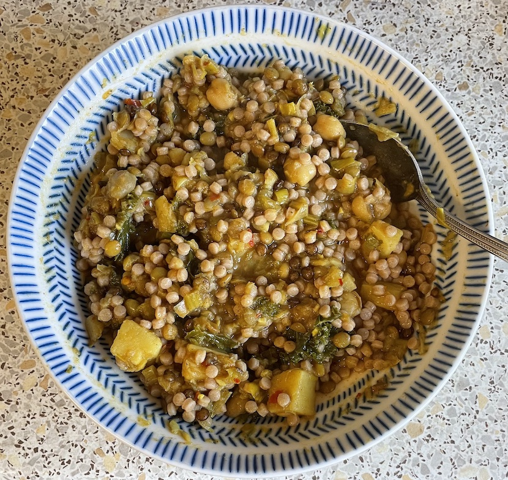

Green lentil & harissa soup
- Cook for 10 mins until softened
- olive oil
- 1 large onion
- 1 carrot diced
- 2 sticks celery diced
- 2 parsnips diced
- Add and cook for 2 mins
- 2 cloves garlic
- 2 tsp ground coriander
- 1 tsp turmeric
- 1 tsp cinnamon
- Add and simmer for 10 mins
- Add and simmer for 10 mins
- 2 leeks halved lengthways and diced
- 1 tin chickpeas
- Add and cook until kale wilted
- 80g kale leaves stalks discarded
- 3 tbsp harissa
- Season with
- coriander chopped
- juice ½ lemon
- salt
- black pepper cracked
- Blitz small amount
Serving
- 6 portions, 60 mins
- with flatbreads / rice / fregola
Notes
Pics
